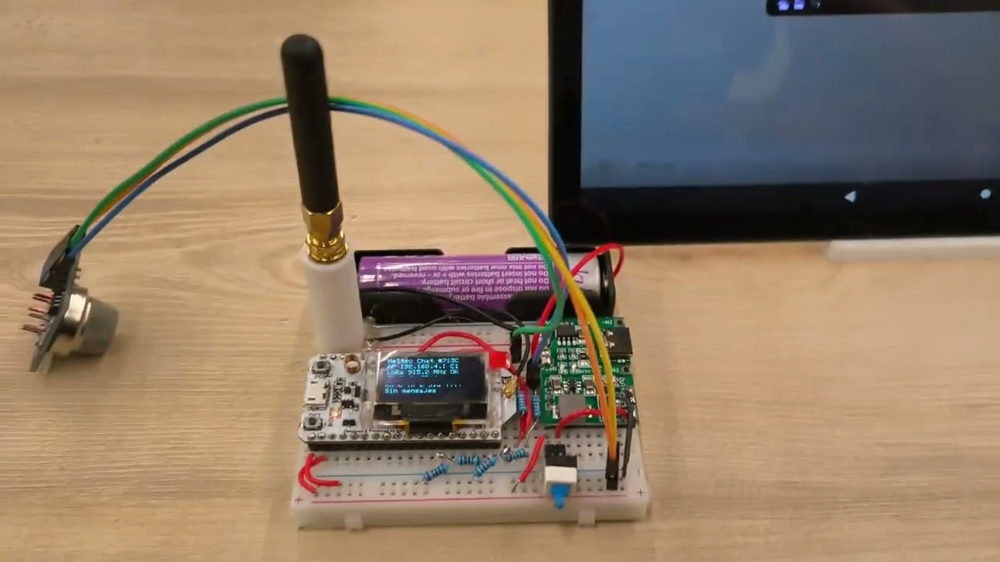

- LoRa
- ESP32
- Heltec
- Wi-Fi
Chat LoRa con Heltec WiFi LoRa 32 V2
Chat entre placas Heltec WiFi LoRa 32 V2 que combina una interfaz web local con comunicación LoRa. Cada placa crea su propia red Wi-Fi para escribir y consultar mensajes desde un navegador, y muestra el estado del nodo en su pantalla OLED.

Tecnologías
- LoRa
- ESP32
- Heltec
- Wi-Fi
Objetivo del proyecto
Intercambiar mensajes de texto entre dos o más nodos Heltec desde un teléfono o computador con navegador. La interfaz se sirve desde la propia placa y la comunicación entre nodos utiliza LoRa, sin depender de una conexión a Internet.
Arquitectura o funcionamiento
El navegador se conecta por Wi-Fi al punto de acceso de una Heltec. Su ESP32 sirve la interfaz desde LittleFS y recibe los mensajes mediante un servidor HTTP local. El transceptor SX1276 los transmite por LoRa a los otros nodos, que los incorporan a su historial local. Los navegadores conectados a cada nodo consultan ese historial para mostrar los mensajes recibidos. La pantalla OLED ofrece un resumen del estado del equipo.
Flujo de funcionamiento
Cada placa anuncia una red HeltecChat-XXXX. Al conectarse y abrir 192.168.4.1, el usuario puede elegir un alias, escribir texto o insertar emojis. La interfaz envía el mensaje a la placa y consulta periódicamente los mensajes y el estado del nodo. El firmware distingue los paquetes de chat de los de presencia, identifica al emisor y descarta mensajes duplicados que aún conserva en el historial. La interfaz muestra los nodos detectados y estima su señal mediante RSSI y SNR; la OLED resume la IP local, los clientes Wi-Fi, el estado LoRa, los contadores RX/TX y el último mensaje corto.
Desarrollo e implementación
El proyecto reúne un sketch para Arduino IDE y una interfaz en HTML, CSS y JavaScript que se carga por separado en LittleFS. El firmware conecta la radio mediante SPI y la pantalla OLED mediante I²C. La configuración publicada utiliza 915,2 MHz, ancho de banda de 125 kHz, spreading factor 7 y sync word 0x34. Para comunicarse, los nodos deben compartir estos parámetros y utilizar una versión compatible del firmware. El README explica las librerías necesarias y los pasos de carga y uso.
Desafíos técnicos
El texto de cada mensaje está limitado a 160 bytes; los emojis pueden ocupar varios bytes por carácter. La placa conserva hasta 48 entradas del historial en RAM, que se pierden al reiniciarla. El estado online se calcula a partir de actividad recibida durante los últimos 18 segundos: indica presencia reciente, pero no confirma la recepción de un mensaje concreto. El contador TX registra las transmisiones realizadas por la radio, sin un acuse de recibo del destinatario.
Resultados
La versión publicada integra mensajería LoRa desde el navegador, alias, emojis, detección de nodos y consulta de señal, junto con un resumen local en la OLED. El repositorio permite consultar el firmware, la interfaz web y las instrucciones de instalación. El vídeo acompaña la ficha con una demostración del montaje.
Aplicaciones posibles
Prototipos y actividades educativas para explorar comunicación por radio entre dispositivos, interfaces web embebidas y la relación entre conectividad Wi-Fi local y transmisión LoRa.
Hardware utilizado
- Dos o más placas Heltec WiFi LoRa 32 V2, con ESP32 y transceptor LoRa SX1276
- Antena LoRa para cada placa
- Pantalla OLED SSD1306 integrada de 128 × 64 píxeles
- Teléfono o computador con Wi-Fi y navegador para acceder a la interfaz local
Software y tecnologías
- Arduino IDE y framework Arduino para ESP32
- Librería LoRa de Sandeep Mistry
- Adafruit SSD1306 y Adafruit GFX para la pantalla OLED
- WiFi, WebServer y DNSServer para el punto de acceso y el portal local
- LittleFS para almacenar HTML, CSS y JavaScript en la placa